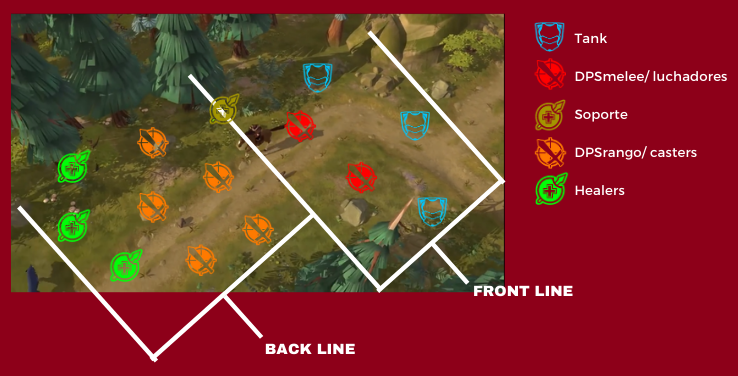

Guía básica de carácter informativa para aquellas personas que deseen iniciarse en batallas zvz.
¿QUE ES ZvZ?
Zerg vs Zerg o mejor conocido como ZvZ, se refiere a peleas masivas u a gran escala en el mundo de
Albion, mayormente se organizan estas
peleas para conquistar territorios, castillos, construir escondites u destruirlos.
CONCEPTOS BASICOS
AoE: Area of effect, referido a habilidades que pueden afectar a varios
enemigos/ aliados en un área determinada.
Backear: Término que se refiere a volver o retroceder a una posición
inicial o anterior.
Blob: Círculo (por lo general rojo) en el mapa donde representan x
cantidad dejugadores. EJ: Blob TI {11 Pjs).
Blob T2 (21 Pjs).etc.
Choke: Espacio Reducido.
Clap:Gran concentración de daño en un área, va de la mano con el
término AoE
Engage: Es el inicio de un ataque contra enemigos.
Flank-Flankear: Posicionarse por un costado, punto ciego,etc. De una
posición inicial de combate.
Push:Se refiere al término de empujar. seguir hacia adelante.
Shot-Caller designado para dar las órdenes de la zerg, a cargo
principalmente de organización,
movimiento, ataque y defensa de la misma.
POSICIONAMIENTO Y MOVIMIENTO
Primero debes entender las posiciones de los jugadores que componen la Zerg. El caller por lo
general se refiere
a dichas posiciones con "líneas":
1era línea o Fron Line:Tank- Luchadores/ DPS Melee- Soportes.
2da línea o Back Line: DPS Rango - Healers- Soportes.

El movimiento de la Zerg queda a cargo del Shot-caller sin embargo, es de suma utilidad y
organización la
utilización de cuadrantes y direcciones. El buen uso de eso puede cambiar el sentido de la batalla.
ATAQUE Y DEFENSA
El engage es determinado por el caller, acompañado por lo general de una cuenta regresiva con el fin
de tener
una mayor coordinación. La habilidad "especial" de tu arma (E) se debe guardar para este momento.
El escenario donde se combate es muy determinante, por ello es importante identificar el "choke" o
estructuras
similares.
Es importante decir que el Healer debe mantener siempre su posición en la back lane,si alguien
requiere de
curación debe acercarse al Healer o algún AoE que este lance.
La función del Tank es iniciar posibles claps cuando se inicie el engage, sin embargo estos deben
dirigirse a
los de la back lane enemiga (DPS Rango - Healers).
Las "E" de los Healers es la única que no se lanza necesariamente en un engage, ya que se puede
sacar más
provecho en momentos posteriores a uno.